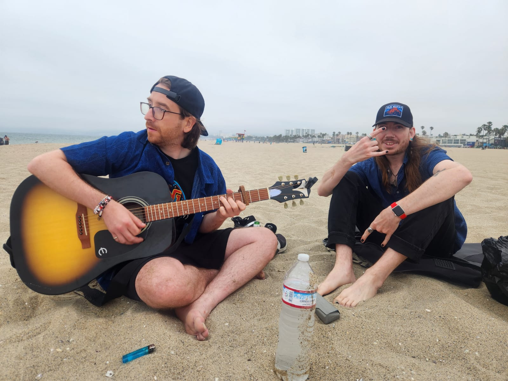

/blog
MAY THE 4TH BE WITH YOU
May 6, 2025
Electronic music is a broad universe of sonic exploration, stretching from the meditative textures of ambient to the pounding rhythms of techno. Just like OUTER SPACE. I have always been a space fan and STAR WARS was my favourite; Return of the Jedi was unmatched. Since the 4th fell on a Sunday. I spent the whole weekend playing my Battlefront II on PS5 and watching the original trilogy of movies. I did buy Lego STAR WARS LOL! I actually did stream quite a bit of Battlefront II and Jedi Survivor you can catch those streams on Youtube and Twitch. Thankfully it was a relaxing weekend and it was well needed diving into the world of star wars kinda refresh my innocence and left me quite inspired. Which is my I revampped my website to give it a new vibe, cyberpunky and what not. Next to dive back into producing some music, feeling very inspired and creative so we shall have to wait and see what comes next? Maybe some more DJ sets too. I have been digesting ALOT of new music in a broad sense. Lots of remix ideas too :D Tá ar muin na muice! Revenge of the 6th today XD! Click Here
Its Festival Season!!!
April 28, 2025
I put a few blogs over on the Clovermind Music website and I have plans for some more intresting content to put up soon enough CHECK IT OUT! It's something small regarding the different genres and sub genres in the EDM world. Getting deeper into electronic music world, most of the artists I want to see these days are DJs that sometimes dabble in live performances. I am gonna be playing catch up in May,I have alot of vlog footage to put together aswell so keep eyes on my Youtube! Its been a busy month so far and April marks the start of festival season! Coachella was AWESOME!. It was a hotter weekend then expected but i somehow managed to power through with no trouble. Kneecap kicked ass and T-Pain blew me away. I saw a bit of everything which was pretty goooood. IONTACH! Go Iontach! EDC is next on the list and I will be fully in it with DJs everywhere, I almost dont know who to see first casuse the line up is so packed. It's gonna be my first time at EDC so Tá sceitimíní orm
Mo Cairde i Venice :)
July 15, 2024

A leithéid de dheireadh seachtaine imeachtaí. Bhí mo chara Matt i Venice Beach le na chailín Emelee. Tá siad ina gcónaí i Vancouver agus shocraigh siad deireadh seachtaine a chaitheamh i Los Angeles. Deir siad nach bhfuil an eitilt ró-fhada, mar sin caithfidh mé cuairt a thabhairt orthu am éigin freisin. Bhí Alex i San Francisco don deireadh seachtaine ag freastal ar 21ú breithlá a nia. Tá an páiste fásta anois ina teaghlach. Bhí brón orm nach raibh mé in ann freastal ar an mbreithlá ach bhí sceitimíní orm freisin mo chara is fearr a fheiceáil, bhí 7 mbliana ann ó bhíomar le chéile go deireanach. Ar maidin Dé Sathairn, líon mé an umar gáis sa Subaru agus chuaigh mé as Fullerton go Venice Beach. Bheadh sé ina thuras uair an chloig ag brath ar thrácht. Ar an lámh eile, bhí a fhios agam go mbeadh sé deacair páirceáil a fháil.Tá rian curtha isteach agam don dúshlán GHOSTWAVE le Taetro agus níor chruthaigh mé ceol ó shin, ach tá mé ag obair go dian ar an teicneolaíocht ceoil agus ag baint taitnimh as mo shamhradh ar an trá. ← Return to Terminal